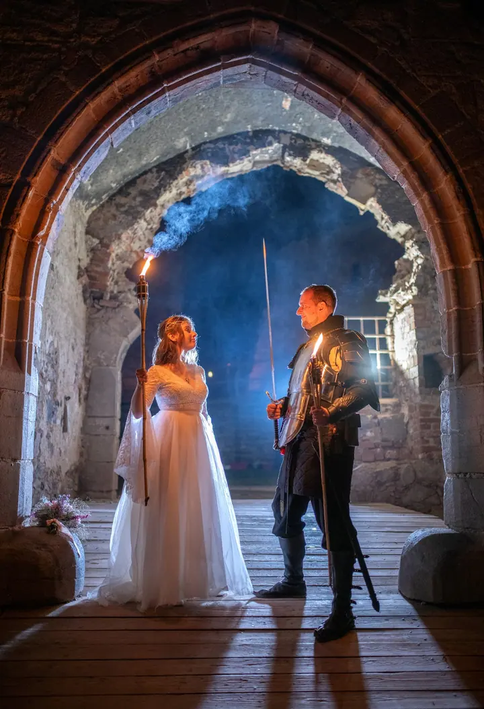
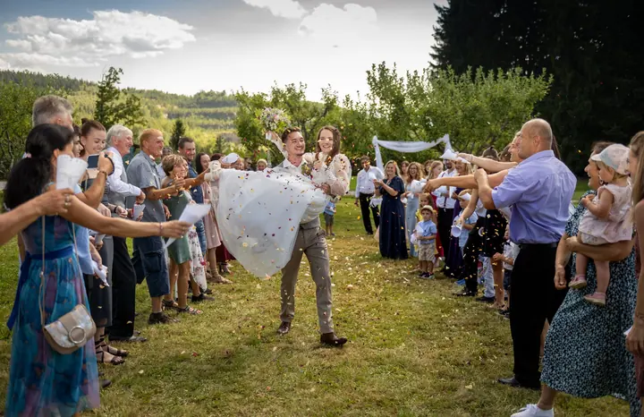
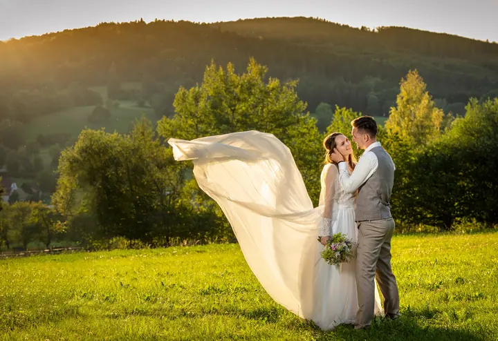
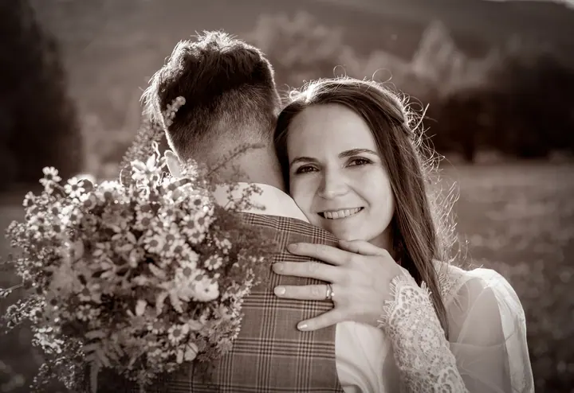

jedna
Svatební fotografie
Na svatbě se snažím být neviditelný, ale po ruce, a pro každý okamžik hledám správné světlo a úhel. Vybrat si můžete z připravených svatebních sad, nebo spolu sestavíme plán na míru.

Svatební a reklamní fotograf · Křemže, Český Krumlov, České Budějovice

Jmenuji se Aleš Motejl a jsem svatební fotograf z Křemže v srdci jižních Čech. Fotografii jsem vystudoval a živí mě už 15 let. Na svatbě se snažím být neviditelný, a přitom vždycky po ruce, a hledám to správné světlo pro každý okamžik.
Více o mně
Co fotím
jedna
Na svatbě se snažím být neviditelný, ale po ruce, a pro každý okamžik hledám správné světlo a úhel. Vybrat si můžete z připravených svatebních sad, nebo spolu sestavíme plán na míru.
dvě
Společné focení ještě před svatbou, při kterém se poznáme a vy si zvyknete na objektiv. Ve svatební den se pak před foťákem cítíte mnohem uvolněněji.
tři
Svůj ateliér jsem přestěhoval z Českých Budějovic do nedaleké Křemže. Tady se můžeme potkat na studiové a portrétní focení.
Reklamní fotografii jsem vystudoval ve Zlíně. Fotím pro firmy, kalendáře, společenské a kulturní akce.

Být neviditelný, ale vždycky po ruce.


Za objektivem
Ahoj, já jsem Aleš. První foťák jsem dostal k 13. narozeninám od táty, který byl taky fotograf. Na střední škole jsem si začal sám vyvolávat fotky a objektiv se stal mým dalším okem. Na svou první svatbu nikdy nezapomenu, protože jsem nestihl novomanželský polibek.
Díky fotkám z cestování po Ukrajině jsem se dostal na Univerzitu Tomáše Bati ve Zlíně a na Multimediální fakultě vystudoval reklamní fotografii. Profesionálně fotím od roku 2005. Od té doby se toho moc nezměnilo, jen jsem analogový foťák vyměnil za digitální a temnou komoru přenechal fotolabu.
Bydlím v Křemži v CHKO Blanský les, takže to mám kousek na většinu oblíbených jihočeských svatebních míst, od Kuklova a Dívčího Kamene po Lipensko. Sám už svatbu za sebou mám, takže vím, kolik pro vás ten den znamená.
Aleš
Sejdeme se a domluvíme, jak má váš den probíhat. Vyberete si jednu z připravených svatebních sad, nebo spolu sestavíme plán na míru.
Pohybuji se všude kolem, ale snažím se být nenápadný, aby vznikly co nejpřirozenější snímky. V tmavé obřadní síni nebo za pošmourného počasí si pomůžu externími blesky.
Úprava fotek zabere víc času než samotné focení, protože každý snímek procházím zvlášť. Podle vytíženosti trvá 2 až 6 týdnů.
Upravené fotky dostanete na flash disku, k nim i vyvolané fotografie. Pak už se k nim můžete vracet celý život.
Portfolio
Fotografie jsou ilustrační
Otázky
Hlavně po jižních Čechách: Český Krumlov, České Budějovice, Hluboká, Třeboň, Zlatá Koruna nebo celé Lipensko. Cestu do Krumlova a Budějovic už obsahuje i základní balíček. Po domluvě přijedu kamkoliv, fotil jsem třeba i v Linci nebo ve Vídni.
Každý snímek pečlivě upravuji, takže podle vytíženosti bývají fotky hotové za 2 až 6 týdnů.
Fotím na techniku Nikon a mám s sebou externí blesky, takže i v temné síni nebo za pošmourného počasí vytvořím zajímavou světelnou atmosféru.
Nemusíte. Můžete si vybrat z připravených svatebních sad, nebo spolu na předsvatební schůzce sestavíme individuální plán podle vašich představ.

Napište pár vět o tom, co si představujete. · +420 608 772 281